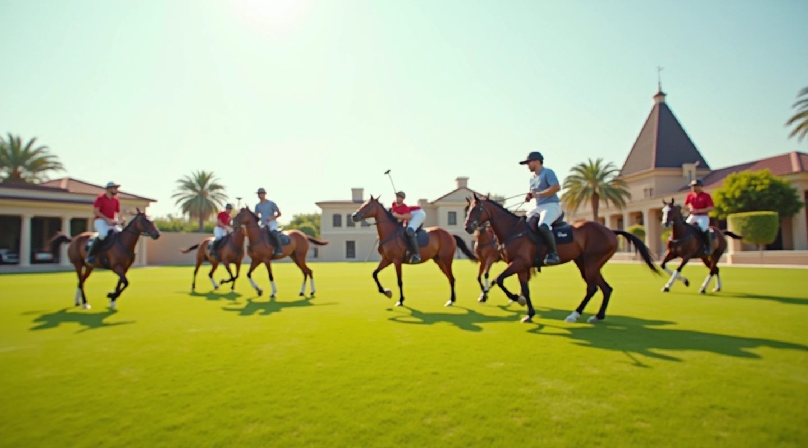

أساسيات البولو وتمارين التنسيق الجماعي
تعلم مبادئ لعبة البولو الأساسية وطور مهارات التنسيق مع فريقك. برامج تدريبية منظمة للاعبين من جميع المستويات.

خطوات تطور لاعب البولو
رحلة التعلم من المبتدئ إلى اللاعب المتقدم تتطلب الصبر والممارسة المنتظمة والتوجيه الصحيح.
المرحلة الأولى: الأساسيات
تعلم طريقة مسك العصا والكرة بشكل صحيح. هذه المرحلة حاسمة لبناء أساس قوي للاعب. يتم التركيز على المهارات الحركية الأساسية والثقة بالنفس.
المرحلة الثانية: تطوير المهارات
بعد إتقان الأساسيات، يبدأ اللاعب بتطوير حركاته. المراوغة والتحكم بسرعة العصا وقوتها تصبح أكثر دقة. التركيز على تحسين اللياقة البدنية والسرعة.
المرحلة الثالثة: التنسيق الجماعي
التركيز على فهم لعبة الفريق. يتعلم اللاعب كيفية التواصل مع زملائه والتحرك بتنسيق. الاستراتيجيات التكتيكية والمواقع على الملعب تصبح أساسية.
المرحلة الرابعة: الاحترافية
اللاعب الآن يتمتع بمهارات عالية وفهم عميق للعبة. يمكنه القيادة على الملعب واتخاذ القرارات السريعة. المشاركة في المنافسات والبطولات تصبح واقعاً.
محتوى تدريبي شامل ومنظم
نقدم موارد تعليمية متنوعة تغطي جميع جوانب لعبة البولو من المهارات الأساسية إلى الاستراتيجيات المتقدمة.
تعليم منظم ومدروس
كل درس مصمم بعناية ليبني على السابق. نبدأ بالأساسيات البسيطة ونتقدم تدريجياً إلى المهارات المعقدة. هذا النهج يضمن فهماً عميقاً وليس سطحياً فقط.
اقرأ المزيدتمارين الفريق
تطوير مهارات التنسيق والتواصل مع زملائك على الملعب.
تحسين اللياقة
تمارين مخصصة لزيادة القوة والسرعة والتحمل.
دقة الأداء
تعلم كيفية التحكم بدقة بالكرة والعصا في المواقف المختلفة.
قياس التقدم
تتبع تطورك عبر المراحل المختلفة من التعلم.
البولو ليست مجرد لعبة، إنها فن يجمع بين المهارة الفردية والعمل الجماعي. تعليم اللاعبين الشباب كيفية إتقان هذا الفن هو مهمتنا الأساسية. نؤمن أن كل لاعب له القدرة على التطور والوصول إلى مستويات عالية بالممارسة المنتظمة والتوجيه الصحيح.
نادي بولو القاهرة
مركز تدريب متخصص
الفرق بين التدريب المنظم والممارسة العشوائية
اكتشف كيف يحدث الفرق عندما يكون لديك برنامج تدريبي منظم وموجه.
الممارسة العشوائية
- ✗ تكرار نفس الأخطاء دون تصحيح
- ✗ عدم وضوح الأهداف والمراحل
- ✗ بطء في التطور والتحسن
- ✗ قلة الثقة والشعور بالإحباط
- ✗ صعوبة في فهم استراتيجيات اللعب
التدريب المنظم
- ✓ تصحيح فوري للأخطاء والعادات السيئة
- ✓ مراحل واضحة للتعلم والتطور
- ✓ تحسن ملموس وملاحظ في الأداء
- ✓ ثقة متزايدة والشعور بالإنجاز
- ✓ فهم عميق للعبة والتكتيكات
ابقَ على اطلاع بآخر المقالات والنصائح
اشترك في قائمتنا للحصول على أحدث المعلومات عن تطور مهاراتك في البولو والتدريبات الفعالة.
موارد تدريبية مختارة
اختر من بين مقالاتنا الموثوقة والمكتوبة بعناية لمساعدتك على التطور.

تقنيات المسك الصحيح للعصا والكرة
تعرف على الطريقة الصحيحة لمسك عصا البولو والتحكم بالكرة بدقة. نصائح عملية من المدربين المحترفين لتحسين أدائك.
اقرأ المقالة الكاملة

نستخدم ملفات تعريف الارتباط لتحسين تجربتك على الموقع. بالمتابعة، فإنك توافق على سياستنا في استخدام الملفات.